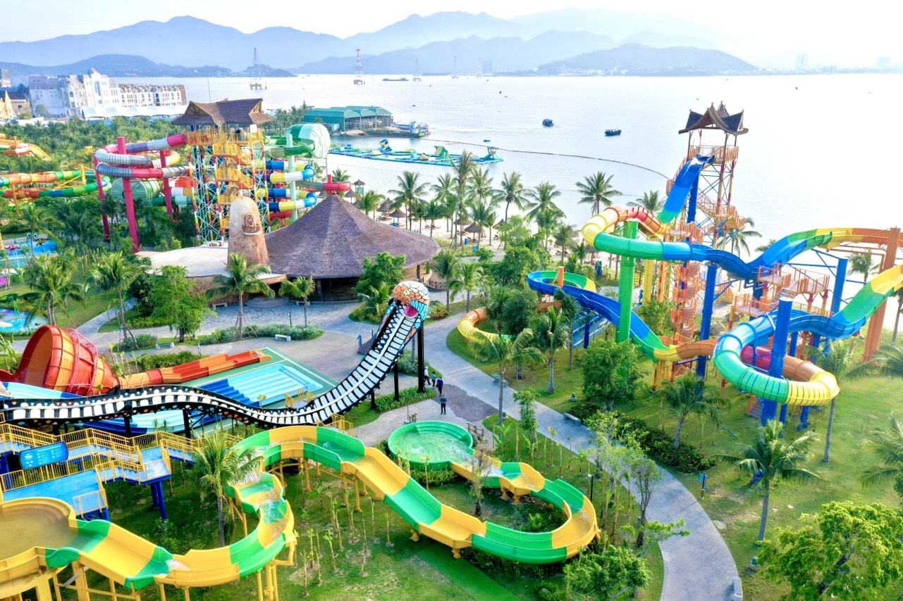
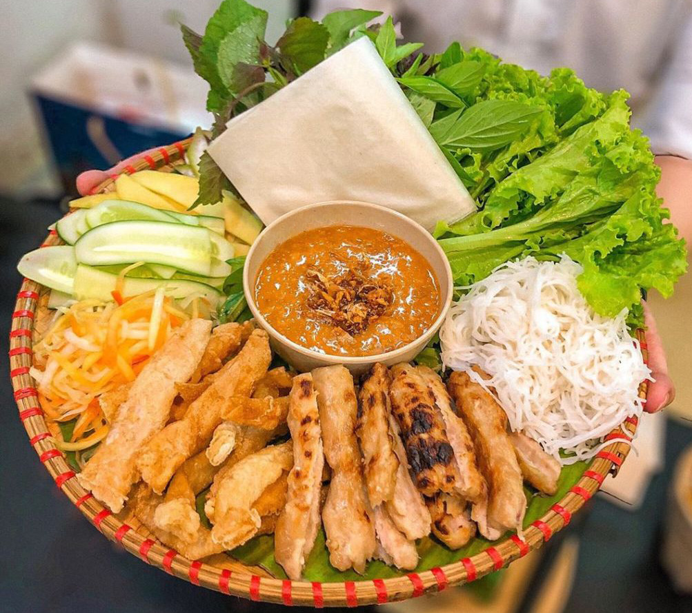

Thông Tin Tour
Giá: 4,500,000 VND
Ngày đi: 25/12/2024
Phương tiện: Máy bay lượt đi + khứ hồi và xe khách giường nằm.
Thời gian: 3 ngày 2 đêm
Giới thiệu: Tour tham quan đảo Resort 5 sao Hòn Tằm, tắm bùn khoáng nóng hồ riêng, bãi biển đẹp xanh mướt và các trò chơi tại Vinpearl Land.
Lịch Trình Tour
- Ngày 1: Đến Nha Trang, check-in khách sạn, nghỉ dưỡng.
- Ngày 2: Tham quan Vinpearl Land, tắm bùn khoáng.
- Ngày 3: Tắm biển Hòn Tằm, trả phòng và trở về.
Điểm Tham Quan Nổi Bật
- Resort 5 sao Hòn Tằm: Nơi có bãi biển riêng biệt.
- Trải nghiệm tắm bùn khoáng nóng: Thác nước nổi tiếng với vẻ đẹp hoang sơ.
-  Vinpearl Land Nha Trang: Với nhiều trò chơi nước thú vị.
Ẩm Thực Đặc Sắc
Tour sẽ giới thiệu đến du khách các món ăn nổi tiếng của Nha Trang:
-
 Hải sản tươi sống: Một món ăn đặc trưng với hương vị đậm đà.
Hải sản tươi sống: Một món ăn đặc trưng với hương vị đậm đà.
-  Nem nướng Ninh Hòa: Món ăn độc đáo kết hợp giữa bánh ướt mềm và lòng gà.
- Bánh canh chả cá: Hương vị thơm ngon, phù hợp với không khí mát mẻ của Nha Trang.
Phương Tiện Di Chuyển
Du khách có thể lựa chọn:
- Máy bay lượt đi + khứ hồi đầy đủ tiện nghi.
- Xe khách giường nằm.